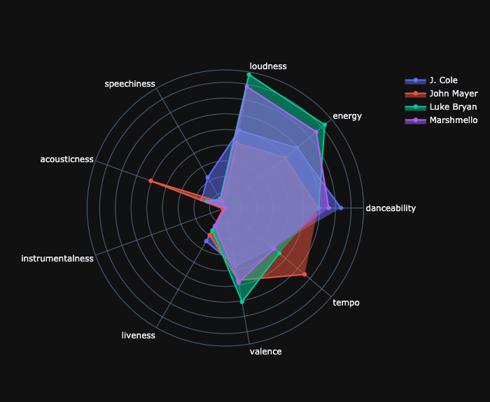
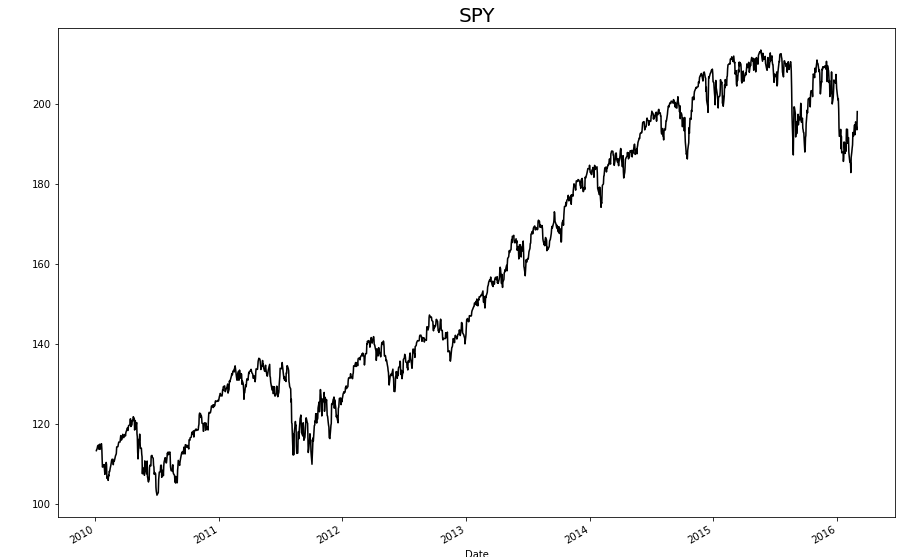
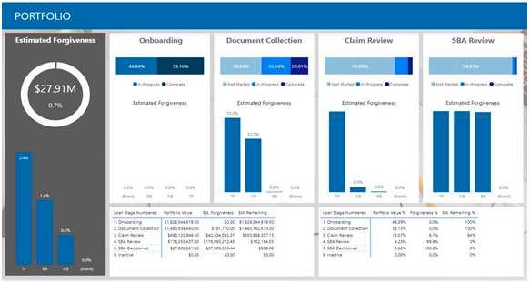

Personal Projects
Spotify Artist Analyzer

Fig.2: Spotify Artist Analyzer - Click for more detail!
In this project, the Spotify API (Spotipy) and several python data analysis/visualization libraries were utilized to create an "Artist Analyzer". With the help of the user's input to determine which artists to include, the analyzer creates different slices of artist information, and several visualizations for more comprehensive analysis.
The analysis is based on the Top 10 Spotify Tracks for each artist, and the respective feature metrics for each track. Track features include: danceability, energy, loudness, speechiness, acousticness, instrumentalness, liveness, valence, tempo. These features allow for an in-depth analysis of any song within the Spotify database.
Click the image above to explore the Analyzer and the definitions for each feature. Some artists may be more similar than you think!
Forecasting the Stock Market

Fig.3: Forecasting the Stock Market - Click for more detail!
In this project, two machine learning algorithms are utilized, Vector Support Regression and Dynamic Time Warping, in an effort to enhance my competitive advantage in the stock market. These models were benchmarked against basic intraday and overnight buying strategies, to assess the effectiveness and credibility over a certain period of time.
Although forecasting the stock market is nearly impossible, I had a great opportunity to experiment with two completely different machine learning models, and learn the similarities/differences in a real world example.
Click the image above for a deeper dive into the technical aspects of the project and the final results!
Acknowledgements
PPP Loan Forgiveness Reporting

Fig.1: PPP Repoting Dashboard - Click for more detail!
"Additionally, interoperability with Power BI provides the bank with dashboards displaying real-time metrics, such as the number of loans processed, time to process, quality check logs, and performance reports for EY’s VOC team...
...Using the tool, EY has been able to process over 50,000 loans totaling more than $10 billion on behalf of its banking customers. What’s more, as the number of PPP loan forgiveness applications has soared, the value of an automated process has also grown."
In response to the Covid-19 pandemic, EY was tasked with an unprecedented assignment to quickly develop a flexible PPP loan forgiveness solution for multiple banks that adhered to the rapidly changing guidelines from the SBA. I had the opportunity to support the reporting team in the overall effort to complete this project in a timely and efficient manner.
Click the image above to read into more detail about the project and how EY partnered with Microsoft to provide an innovative solution.
For more details about my professional experience, please contact me at matt.castelli2@gmail.com.